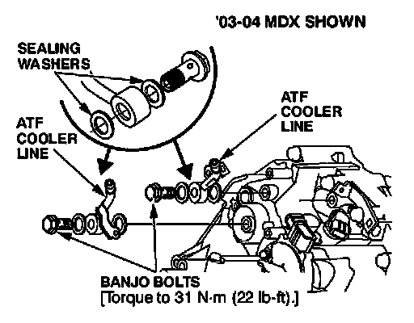

A/T - Fluid Leak From Cooler Line Banjo Bolts
SOURCE: Acura Service News
TITLE: Fixing A/T Banjo Bolt Leaks
APPLIES TO: All models
SERVICE TIP:

Got ATF leaking from any of the A/T banjo bolts? The first thing you need to do is replace the sealing washers. Next, start threading the banjo and line bracket bolts in their holes. Finally, torque the banjo bolt to 31 Nm (22 lb-ft) and the line bracket bolt to 9.8 Nm (7.2 lb-ft.).
NOTE: The banjo bolt torque spec we're recommending is slightly higher than what's listed in the S/M. This is intentional.
If you torque just the banjo bolt, you won't really fix the leak. ATF leaks at the banjo bolt stem from the line bracket getting tightened before the banjo bolt. This can misalign the banjo joint, causing the banjo bolt sealing washers not to contact their mating surfaces evenly. Once the sealing washers have been used, you must replace them.